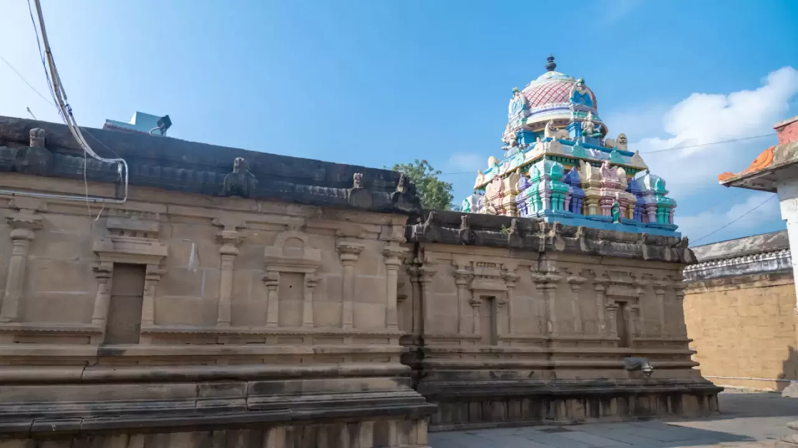

Sri Ulagalantha Perumal Temple
The towering entrance is rich with amazing sculptural works, the corridors are charming with a symphony of holy hymns and the sanctum sanctorum has an inexplicable glow to it that will keep you standing still. Sri Ulagalantha Perumal Temple is a sight to behold.
Some temples are purely places of worship. However there are a few others that will amaze you with its architectural, structural and splendid virtues. When all these combine, there arises a unique feel of divinity that will keep you wanting to visit the place over and over again. Sri Ulagalantha Perumal Temple is an example of such a masterpiece that stands as a fitting testimony to Tamil architecture. It’s a place that will charm you with an ethereal magnetic pull.
Considered one among the 108 sacred ‘Divya Desams’ dedicated to Lord Vishnu, Sri Ulagalantha Perumal Temple is built in the Indo-Dravidian architectural style. Grand pavilions and intricate carvings are what will welcome you to this astounding place of worship. It is believed that the temple was built by the Pallavas and later modified many times during the reigns of Medieval Cholas, Vijayanagara Kings and Madurai Nayaks. Based on the inscriptions and locations in the premises, the temple is believed to be the oldest in Kancheepuram. The temple covers an area of 60,000 sq.ft and comprises three main towers with seven kalasas. The temple also houses four Divya Desams including Thirukkarvaanam, Thirukaaragam, Thiruooragam and Thiruneeragam in its own unique way.
Thrivikrama – the giant form of Vamana, one of the 10 primary avatars of Lord Vishnu, is worshiped in the temple. The image of Ulagalantha Perumal is over 35 ft in height. The elevated roof is designed peculiarly in order to accommodate the size of the deity.


Kancheepuram Bus Stand
Chennai International Airport, 63 km away.
Kancheepuram Railway Station, about 2 km away.
October to February is the best time to visit Kancheepuram.